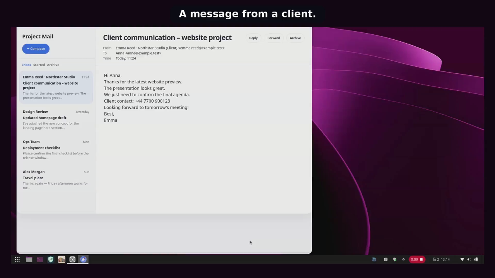

Detection and four risk levels
Rules recognize supported data categories and distinguish low, medium, high, and critical risk. The banner color helps you assess the situation more quickly.
Privacy-focused clipboard manager · GNOME
Copy as usual. CopyPasteBin warns when text looks like a password, key, personal data, or financial information. It helps you review, edit, or redact the content before use—while the decision about what to paste remains yours.
The story behind the project
CopyPasteBin grew out of everyday work with text, images, and AI tools. Copying pieces of information, preparing prompts, and sharing screenshots had become a natural part of that work. But not everything we copy is something we also want to pass on.
What was missing was a simple tool that could help you check what copied content contains, warn you about accidentally exposing sensitive data, and let you redact it without unnecessary extra steps.
That is how CopyPasteBin came to be: a local app that helps you work with information more safely and conveniently, while leaving you in control of what you share.
Although working with AI provided the original inspiration, its uses extend much further. Wherever we copy, edit, and pass on information, it is worth knowing what is really being shared.
Example uses
Core features
Rules recognize supported data categories and distinguish low, medium, high, and critical risk. The banner color helps you assess the situation more quickly.
Open copied content, revise or expand it, or redact detected fragments. The editor replaces the clipboard content only after your confirmation.
Open a local PNG or JPEG, cover selected areas with rectangles, and save a new PNG. The original file remains unchanged.
Add local markers that matter in your work. Exceptions are limited to one exact low- or medium-risk detection.
Up to 15 eligible text items can remain in current-session RAM. Recognized secrets and high-risk content are excluded, and history saving can be disabled independently of warnings and the editor.
Pause protection for a chosen period or clear an alerted clipboard after 1, 5, or 15 minutes. Both features remain under explicit user control.
The real interface
The video and screenshots show the real CopyPasteBin interface using demonstration data only.

See CopyPasteBin 1.2 in actionThe short demo opens on YouTube. The website connects to the external service only after you click.Privacy and security
Detection and redaction run on your computer. CopyPasteBin requires no account or connection to an AI service and does not save clipboard content in persistent history.
The app and this website do not send usage analytics.
No warning does not mean a text is safe. Rules can miss something or raise a false positive.
Up to 15 recent text items remain only in current-session RAM.
Release · 1.2
Choose one method and use its matching update process. The PPA installs CopyPasteBin system-wide through APT; the tar.gz archive installs it locally for one user.
The most convenient option on Ubuntu. APT installs the three CopyPasteBin components and later updates them with normal system updates.
sudo add-apt-repository ppa:annakozlowska/copypastebinsudo apt updatesudo apt install copypastebinPPA updates arrive through APT with normal system updates. CopyPasteBin does not check for new versions in the background.
A user-local installation for the current account. This is also the appropriate path for a compatible environment without APT, such as Fedora.
sha256sum --check --ignore-missing SHA256SUMS./install.sh --check-only
./install.shDownload the newer archive from GitHub Release, verify it again, and run its included install.sh. Your user settings are preserved.
Required environment
Python 3.11 or newer, GJS, GTK 4, GdkPixbuf, GioUnix, and GNOME Extensions are required. Log out and back in after installation or upgrade.
1.2-2 passed installation, upgrade, removal, and final LIVE testing.Do not mix a PPA/DEB installation with the user-local tar.gz installation. KDE Plasma, Cinnamon, Xfce, and X11 sessions remain outside the confirmed scope.
Public roadmap
Features we are improving and possibilities we are still exploring.
Open source
Development was assisted by ChatGPT and Codex from OpenAI. CopyPasteBin is an independent project and is not affiliated with, endorsed by, or sponsored by OpenAI.
CopyPasteBin is open-source software licensed under GPL-3.0-or-later. Review the source, documentation, and security model. If you find a bug, report it publicly without attaching real secrets or private clipboard content.